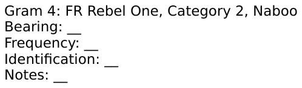

Gram 04 - FR Rebel One, Category 2, Naboo
Source provenance (debug):
Source publication: progress-test-3
Source chapter (deck):
Source gram number: 4
Published as: progress-test-3 / gram 04
Analysis image source: Instructor Progress Test 3 Grams/Instructor Progress Test 3 Grams Files/Gram 4/Analysis Sheet.png
Analysis Sheet

WAV 1
WAV 2
Lofar 1
 |
|
| time-start | 0 |
| time-end | 156 |
| freq-start | 0 |
| freq-end | 400 |